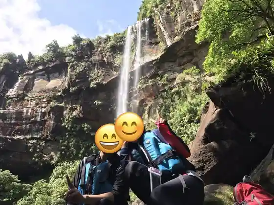
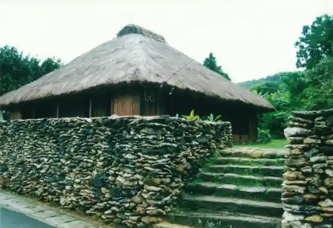
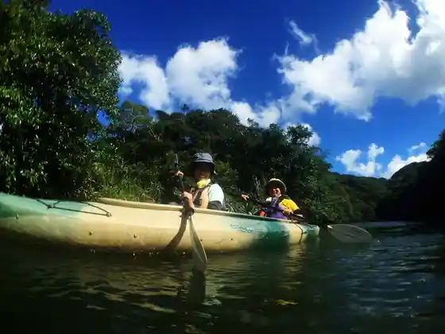

Iriomote Shima Saniidei
Taketomi, Okinawa · 090-6860-9533 · Official / source link
Kayakku & Rikuesuto Iriomote Shima Kurage
Taketomi, Okinawa · 0980-85-5493 · Official / source link

Shinmori Ie House
Taketomi, Okinawa · Official / source link

Iriomote Shima Kanu Tour Fusha
Taketomi, Okinawa · 090-8915-0931 · Official / source link

Gatsugahama (Todomari no Hama)
Taketomi, Okinawa · 0980-82-5445 · Official / source link
Iriomote Shima
Taketomi, Okinawa · 0980-82-5445 · Official / source link
Iriomote Yasei Seibutsu Hogo Center
Taketomi, Okinawa · 0980-85-5581 · Official / source link
KUINA&KAYAK Iriomote
Taketomi, Okinawa · 080-9036-9027 · Official / source link
TAKE Daibingusukuru
Taketomi, Okinawa · 0980-85-6871 · Official / source link
Taketomi Taketomi Shima Juyo Dentoteki Kenzobutsu Gun Hozon Chiku (Kokusen Sadashige Yo Dentoteki Kenzobutsu Gun)
Taketomi, Okinawa · Official / source link
Kondoi Hama
Taketomi, Okinawa · 0980-82-5445 · Official / source link
Kaiji Hama
Taketomi, Okinawa · 0980-82-5445 · Official / source link
Taketomi Shima
Taketomi, Okinawa · 0980-82-5445 · Official / source link
Ura Uchikawa Kanko
Taketomi, Okinawa · 0980-85-6154 · Official / source link
Haemi Ta no Hama
Taketomi, Okinawa · 0980-82-5445 · Official / source link
Nishi Sambashi
Taketomi, Okinawa · 0980-82-5445 · Official / source link
Iriomote Ishigaki National Park Taketomi Shima Bijita Center Taketomi Shima Yugafu Kan
Taketomi, Okinawa · 0980-85-2488 · Official / source link
Nishi Hama
Taketomi, Okinawa · 0980-82-5445 · Official / source link
Hateruma Shima Hoshizora Kansoku Tawa
Taketomi, Okinawa · 0980-85-8112 · Official / source link
Takana Saki
Taketomi, Okinawa · 0980-82-5445 · Official / source link
Hama Shitan Gunraku
Taketomi, Okinawa · 0980-82-6191 · Official / source link
Koto Jo (Kuni Shitei Historic Site)
Taketomi, Okinawa · 0980-82-6191 · Official / source link
Hateruma Shima
Taketomi, Okinawa · 0980-82-5445 · Official / source link
Shimusu Ga (Machi Shitei Historic Site)
Taketomi, Okinawa · 0980-82-6191 · Official / source link
Kuro Shima Kenkyusho
Taketomi, Okinawa · 0980-85-4341 · Official / source link
Kuro Shima
Taketomi, Okinawa · 0980-82-5445 · Official / source link
Kuro Shima Bijita Center
Taketomi, Okinawa · 0980-85-4149 · Official / source link
Hatoma Shima
Taketomi, Okinawa · 0980-82-5445 · Official / source link
Yu Shima
Taketomi, Okinawa · 0980-85-5470 · Official / source link
Shinjo Shima
Taketomi, Okinawa · 0980-82-5445 · Official / source link